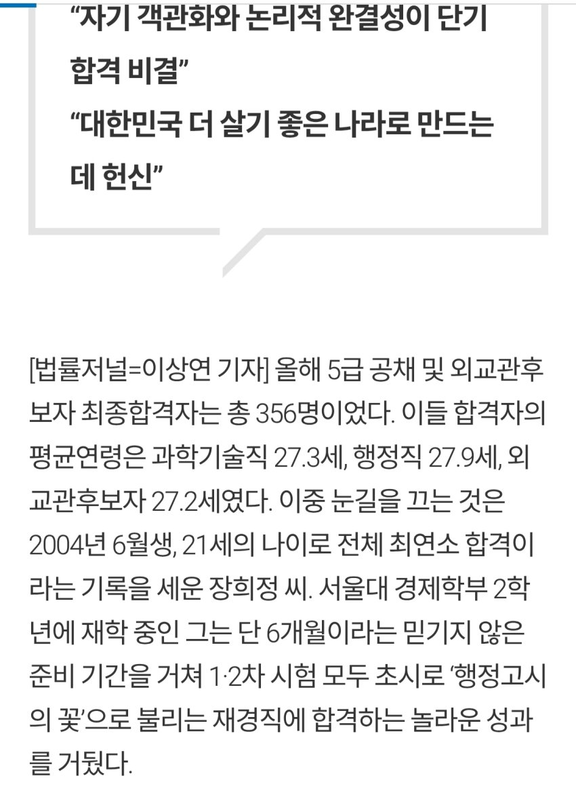
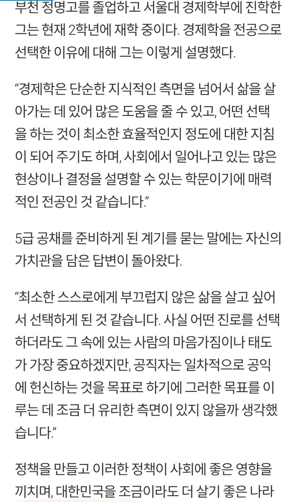
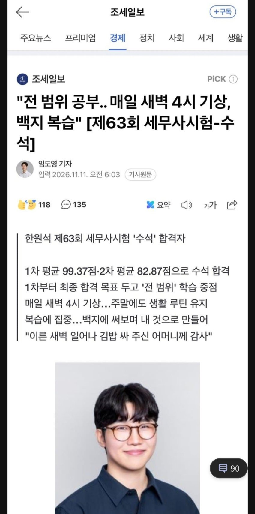
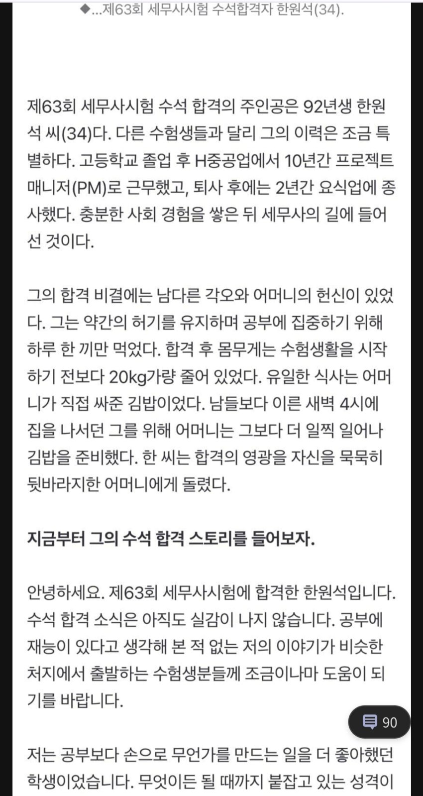

21살 최연소 행시 패스, 그냥 행시도 아니고 행시의 꽃 재경직 합격ㄷㄷ
그것도 단 6개월 공부해서 이뤄낸 성과인데도 의심 덜 받는건..
신뢰있어보이는 와꾸와 서울대 경제학과 학생이라서 ㅇㅅㅇ;;
반면 동질감 느껴지는 울 삼대남 세무냥이는..


누가봐도 사기꾼 관상에 공고나온 고졸 삼대남 틀딱이라는 이유로 억까?를 받고 있음 ㅋㅋㅋㅋ..
만약에 세무냥이가 20대 초중반에 서울대에 사기꾼 관상 아니었으면 의심 안 받았을까?...
댓글
수집 당시 댓글 272개
ㅇㅇ · 11.14 23:52:45
· ㅇㅇ · 11.15 00:49:39
환란 전 교회 휴거 · 11.14 23:54:08
ㅇㅇ · 11.14 23:59:21
· ㅇㅇ · 11.15 00:09:59
· ㅇㅇ · 11.15 08:14:53
· ㅇㅇ · 11.15 11:07:47
· ㅇㅇ · 11.15 11:53:40
ㅇㅇ · 11.15 00:02:35
ㅇㅇ · 11.15 00:02:35
· ㅇㅇ · 11.15 00:07:59
· ㅇㅇ · 11.15 00:08:19
· ㅇㅇ · 11.15 00:09:53
· ㅇㅇ · 11.15 00:10:47
· ㅇㅇ · 11.15 00:10:49
· ㅇㅇ · 11.15 00:13:04
· ㅇㅇ · 11.15 00:16:53
· ㅇㅇ · 11.15 00:57:57
· ㅇㅇ · 11.15 02:50:58
· ㅇㅇ · 11.15 02:51:10
· ㅇㅇ · 11.15 03:07:16
· ㅇㅇ · 11.15 06:11:43
· ㅇㅇ · 11.15 08:03:05
· ㅇㅇ · 11.15 09:58:58
· ㅇㅇ · 11.15 09:59:54
· ㅇㅇ · 11.15 10:13:52
· ㅇㅇ · 11.15 10:18:30
· ㅇㅇ · 11.15 10:18:56
· ㅇㅇ · 11.15 10:21:01
· ㅇㅇ · 11.15 10:21:56
· ㅇㅇ · 11.15 12:22:53
ㅇㅇ · 11.15 00:06:48
ㅇㅇ · 11.15 00:09:16
ㅇㅇ · 11.15 00:09:49
ㅇㅇ · 11.15 00:09:54
마슈마론 · 11.15 00:14:05
ㅇㅇ · 11.15 00:25:26
ㅁㅁㅁ · 11.15 00:26:54
· ㅇㅇ · 11.15 00:36:21
ㅇㅇ · 11.15 00:27:24
· ㅇㅇ · 11.15 00:27:50
pyuru · 11.15 00:39:42
ㅇㅇ · 11.15 00:40:31
pyuru · 11.15 00:43:14
· ㅇㅇ · 11.15 01:28:30
ㅇㅇ · 11.15 01:01:54
· ㅇㅇ · 11.15 01:08:25
· ㅇㅇ · 11.15 02:04:22
ㅇㅇ · 11.15 01:08:19
ㅇㅇ · 11.15 01:17:11
ㅇㅇ · 11.15 01:26:02
· ㅇㅇ · 11.15 08:25:53
ㅇㅇ · 11.15 01:33:05
ㅇㅇ · 11.15 01:35:08
ㅇㅇ · 11.15 01:53:02
ㅇㅇ · 11.15 02:06:04
ㅇㅇ · 11.15 02:13:30
ㅇㅇ · 11.15 02:30:29
ㅁㄴㅇ · 11.15 02:41:09
· ㅇㅇ · 11.15 02:43:48
ㅇㅇ · 11.15 02:51:29
· ㅇㅇ · 11.15 05:52:09
· ㅇㅇ · 11.15 12:08:03
ㅇㅇ · 11.15 02:58:08
· ㅇㅇ · 11.15 02:58:34
· woze · 11.15 10:58:13
ㅁㅁ · 11.15 03:16:06
주소킹 · 11.15 03:20:18
ㅇㅇ · 11.15 04:32:51
· ㅇㅇ · 11.15 05:09:10
· ㅇㅇ · 11.15 05:47:34
ㅇㅇ · 11.15 05:03:40
ㅇㅇ · 11.15 05:04:11
ㅇㅇ · 11.15 05:04:15
ㅇㅇ · 11.15 05:40:23
나갤러 · 11.15 05:46:59
토좃대감 · 11.15 06:11:53
ㅇㅇ · 11.15 07:17:02
· ㅇㅇ · 11.15 09:31:41
· ㅇㅇ · 11.15 10:01:40
ㅇㅇ · 11.15 07:18:48
ㅇㅇ · 11.15 07:57:25
ㅇㅇ · 11.15 08:17:46
ㅇㅇ · 11.15 08:24:30
ㅇㅇ · 11.15 08:33:15
ㅇㅇ · 11.15 08:46:10
· ㅇㅇ · 11.15 09:30:19
· ㅇㅇ · 11.15 09:47:45
· ㅇㅇ · 11.15 10:01:59
ㅇㅇ · 11.15 09:45:36
정은띠니 · 11.15 09:56:09
ㅇㅇ · 11.15 10:29:55
ㅇㅇ · 11.15 11:17:20
ㅇㅇ · 11.15 11:43:15
· ㅇㅇ · 11.15 11:56:15
ㅇㅇ · 11.15 11:55:57
ㅇㅇ · 11.15 12:16:42
ㅇㅇ · 11.15 12:23:49
ㅇㅇ · 11.15 13:46:59
여전사이은해 · 11.15 14:36:26
· ㅇㅇ · 11.14 23:23:33
· ㅇㅇ · 11.14 23:34:13
· ㅇㅇ · 11.14 23:36:16
· ㅇㅇ · 11.15 00:01:25
· ㅇㅇ · 11.15 00:03:46
ㅇㅇ · 11.14 22:53:29
· ㅇㅇ · 11.15 00:18:35
ㅇㅇ · 11.14 22:54:07
아이에게 Ai안경을사주자
ㅇㅇ · 11.14 22:54:22
ㅇㅇ · 11.14 22:54:40
ㅇㅇ · 11.14 22:54:53
· 평원 · 11.14 23:15:53
· ㅇㅇ · 11.14 23:23:01
ㅇㅇ · 11.14 22:55:09
· ㅇㅇ · 11.14 22:58:13
Adriel · 11.14 22:55:55
ㅇㅇ · 11.14 22:56:01
· ㅇㅇ · 11.14 22:58:40
· 평원 · 11.14 23:03:27
· ㅇㅇ · 11.14 23:08:39
ㅇㅇ · 11.14 22:56:32
· ㅇㅇ · 11.14 22:59:44
· 평원 · 11.14 23:07:18
ㅇㅇ · 11.14 22:57:30
· ㅇㅇ · 11.14 22:59:13
· ㅇㅇ · 11.14 22:59:38
· ㅇㅇ · 11.15 00:08:43
ㅇㅇ · 11.14 22:58:06
· ㅇㅇ · 11.14 22:58:43
· 평원 · 11.14 23:01:48
· ㅇㅇ · 11.14 23:02:14
· ㅇㅇ · 11.14 23:02:46
· ㅇㅇ · 11.15 00:55:10
· ㅇㅇ · 11.15 02:14:40
· ㅇㅇ · 11.15 03:30:42
평원 · 11.14 22:59:16
· ㅇㅇ · 11.14 23:00:24
MR4오너 · 11.14 22:59:53
ㅇㅇ · 11.14 23:00:51
· 평원 · 11.14 23:03:07
ㅇㅇ · 11.14 23:01:26
ㅇㅇㅇ · 11.14 23:02:26
ㅇㅇ · 11.14 23:02:47
ㅇㅇ · 11.14 23:04:56
ㅇㅇ · 11.14 23:05:19
ㅇㅇ · 11.14 23:05:27
· 평원 · 11.14 23:10:08
· ㅇㅇ · 11.14 23:12:26
· 평원 · 11.14 23:13:28
· ㅇㅇ · 11.15 05:04:35
평원 · 11.14 23:06:54
· ㅇㅇ · 11.15 00:16:40
ㅇㅇ · 11.14 23:07:03
ㅇㅇ · 11.14 23:08:21
· ㅇㅇ · 11.14 23:41:11
· ㅁㄴㅇ · 11.15 02:38:43
ㅇㅇ · 11.14 23:09:44
ㅇㅇ · 11.14 23:11:18
ㅇㅇ · 11.14 23:11:53
· ㅇㅇ · 11.14 23:13:28
· ㅇㅇ · 11.15 00:17:33
· ㅇㅇ · 11.15 00:56:30
ㅇㅇ · 11.14 23:12:43
ㅇㅇ · 11.14 23:12:48
ㅇㅇ · 11.14 23:14:55
ㅇㅇ · 11.14 23:15:25
· 평원 · 11.14 23:17:30
· ㅇㅇ · 11.14 23:25:39
ㅇㅇ · 11.14 23:15:49
· ㅇㅇ · 11.14 23:18:18
· ㅇㅇ · 11.15 00:17:05
ㅇㅇ · 11.14 23:15:58
· 평원 · 11.14 23:16:44
· ㅇㅇ · 11.14 23:21:09
ㅇㅇ · 11.14 23:20:59
· ㅇㅇ · 11.14 23:23:30
ㅇㅇ · 11.14 23:26:12
ㅇㅇ · 11.14 23:29:00
ㅇㅇ · 11.14 23:29:47
ㅇㅇ · 11.14 23:29:56
ㅇㅇ · 11.14 23:34:23
나갤러 · 11.14 23:34:40
· ㅇㅇ · 11.14 23:52:14
· ㅇㅇ · 11.15 03:43:28
ㅇㅇ · 11.14 23:38:10
ㅇㅇ · 11.14 23:39:13
ㅇㅇ · 11.14 23:41:17
ㅇㅇ · 11.14 23:44:19
ㅇㅇ · 11.14 23:44:41
· ddd · 11.15 09:55:51
· ㅇㅇ · 11.15 09:57:13
· ddd · 11.15 09:58:13
· ㅇㅇ · 11.15 10:00:42
· ddd · 11.15 10:02:20
· ㅇㅇ · 11.15 10:04:32
· ddd · 11.15 10:05:24
· ㅇㅇ · 11.15 10:08:58
· ㅇㅇ · 11.15 10:49:31
· ddd · 11.15 11:00:28
ㅇㅇ · 11.14 23:51:10
ㅇㅇ · 11.12 20:57:10
· 평원 · 11.14 23:14:32
ㅇㅇ · 11.12 20:57:42
ㅇㅇ · 11.12 20:57:54
· ㅇㅇ · 11.12 20:58:14
· ㅇㅇ · 11.12 21:30:07
· ㅇㅇ · 11.14 22:49:56
· ㅇㅇ · 11.14 22:53:07
· ㅇㅇ · 11.14 22:53:19
· ㅇㅇ · 11.14 22:54:01
· ㅇㅇ · 11.14 23:01:02
· ㅇㅇ · 11.14 23:01:18
· ㅇㅇ · 11.14 23:04:39
· ㅇㅇ · 11.14 23:05:47
· ㅇㅇ · 11.14 23:12:12
· ㅇㅇ · 11.14 23:50:37
· ㅇㅇ · 11.15 00:03:22
· ㅇㅇ · 11.15 00:07:49
ㅇㅇ · 11.12 20:58:54
· 2456778 · 11.14 22:49:38
· ㅇㅇ · 11.14 23:17:25
마유미 · 11.12 20:59:42
· 평원 · 11.14 23:04:12
ㅇㅇ · 11.12 21:00:33
응웅앵 · 11.12 21:01:30
· 응웅앵 · 11.12 21:01:47
ㅇㅇ · 11.12 21:08:26
ㅇㅇ · 11.12 21:09:35
ㅇㅇ · 11.12 21:55:37
· 2456778 · 11.14 22:48:44
ㅇㅇ · 11.12 22:44:23
· ㅇㅇ · 11.14 22:49:47
ㅇㅇ · 11.12 22:50:11
10콜맨 · 11.13 10:51:26
아울락 · 11.13 11:49:57
· 평원 · 11.14 23:04:36
ㅇㅇ · 11.14 22:46:53
지옥행 · 11.14 22:46:56
· ㅇㅇ · 11.14 22:55:51
· 지옥행 · 11.14 22:56:37
· ㅇㅇ · 11.14 23:06:52
· 평원 · 11.14 23:16:25
· ㅇㅇ · 11.14 23:28:45
2456778 · 11.14 22:47:49
ㅇㅇ · 11.14 22:48:01
· ㅇㅇ · 11.14 22:49:47
· ㅇㅇ · 11.14 22:50:17
· ㅇㅇ · 11.14 22:52:22
메윈터 · 11.14 22:48:25
· ㅇㅇ · 11.14 22:49:34
ㅇㅇ · 11.14 22:49:20
ㅇㅇ · 11.14 22:49:46
· 2456778 · 11.14 22:50:25
· ㅇㅇ · 11.14 22:56:28
ㅇㅇ · 11.14 22:49:57
· 평원 · 11.14 23:00:22
ㅇㅇ · 11.14 22:50:43
ㅇㅇ · 11.14 22:51:08
ㅇㅇ · 11.14 22:51:25
ㅇㅇ · 11.14 22:51:43
ㅇㅇ · 11.14 22:51:56
· ㅇㅇ · 11.14 22:54:01
· 평원 · 11.14 23:08:34
· ㅇㅇ · 11.14 23:54:26
· ㅇㅇ · 11.15 00:41:56
ㅇㅇ · 11.14 22:52:20
· ㅇㅇ · 11.14 22:53:23
· ㅇㅇ · 11.14 22:56:15
· ㅇㅇ · 11.14 23:00:39
· ㅇㅇ · 11.14 23:06:05
· ㅇㅇ · 11.14 23:09:37
· ㅇㅇ · 11.14 23:13:46